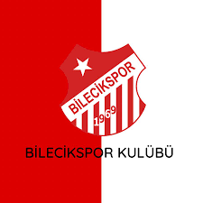

Bilecikspor
Bilecikspor, Bilecik ilinin en önemli spor kulüplerinden biridir. Kulüp, 1969 yılında kurulmuştur.
Bilecikspor, genellikle amatör liglerde mücadele etmektedir.
Türkiye'nin futbol liglerinde profesyonel olarak yer almamaktadır.
Kulüp, genellikle Bilecik ilindeki genç sporcuların yeteneklerini geliştirmeyi amaçlamaktadır.
Futbol alanında faaliyet göstermenin yanı sıra, diğer spor dallarında da etkinlikler düzenleyebilirler.
Ancak, genellikle futbol kulübü olarak bilinirler ve Bilecik'in futbol camiasında önemli bir yere sahiptirler.
